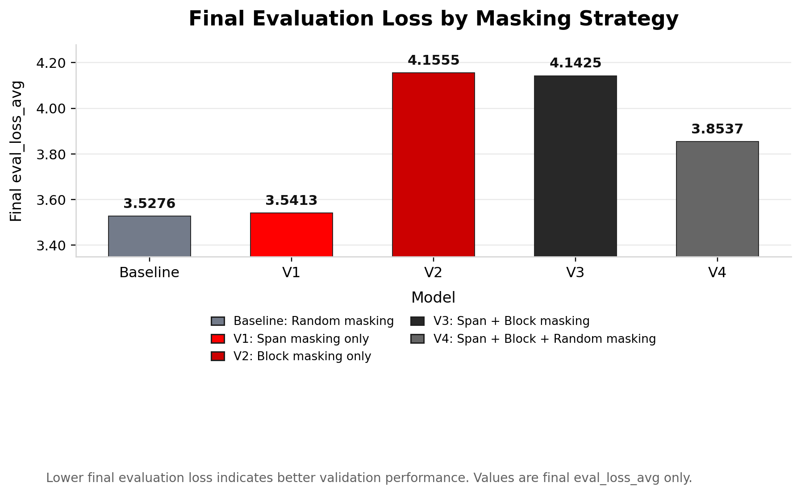

Baseline
random / model_v0
The original nano4M selects target positions uniformly at random across all modalities.
Text: random
Image: random
Comparing random, span, block, and mixed masking for multimodal pretraining
The baseline nano4M model uses random masking. Our project compares structured masking strategies that respect modality structure: span masking for text, block masking for image tokens, and mixed random/structured strategies — keeping the architecture, dataset, and compute budget fixed.
Scene descriptions are sequential. Span masking removes contiguous token segments — a harder, more linguistically natural objective.
RGB, depth, and normal tokens form a 16×16 spatial grid. Block masking removes rectangular regions, forcing the model to reason about coherent missing areas.
No universal best strategy. Structured masking helps only when aligned with the generation direction. Training loss alone is insufficient to rank strategies.
Architecture, dataset, and compute are identical. Only the target-position selection policy changes.
The original nano4M selects target positions uniformly at random across all modalities.
Contiguous span masking on text, with random masking on image modalities.
Random masking on text, with rectangular block masking on image-token grids.
Fully structured objective: span masking on text and block masking on images.
Mixed masking alternates between random and structured choices for each modality.
Lower final evaluation loss indicates better validation performance. These values are final evaluation loss values only, not training loss.

This bar chart compares the final evaluation loss of the five nano4M masking strategies. Lower values indicate better validation performance. The random masking baseline obtains the lowest final evaluation loss, followed very closely by V1 with span masking. V4 improves over V2 and V3, but it does not outperform the baseline in terms of final evaluation loss. This suggests that, in this experiment, more complex masking strategies do not automatically lead to a lower validation loss.
200 validation samples. Bold indicates the best result per column.
BLEU-4, CIDEr, ROUGE-L, Exact Match (0–100 scale)
| Model | BLEU-4 | CIDEr | ROUGE-L | Exact Match |
|---|---|---|---|---|
| Baseline | 69.59 | 37.07 | 84.31 | 4.00 |
| V1 | 67.60 | 35.38 | 83.03 | 3.50 |
| V2 | 68.70 | 34.40 | 83.67 | 4.00 |
| V3 | 68.51 | 33.58 | 83.72 | 2.00 |
| V4 | 69.64 | 37.55 | 84.07 | 4.00 |
CLEVR fidelity (main), CLIP score, Std (200 samples)
| Model | CLEVR ↑ | CLIP ↑ | Std |
|---|---|---|---|
| Baseline | 0.4226 | 0.6287 | 0.298 |
| V1 | 0.4735 | 0.6301 | 0.287 |
| V2 | 0.4440 | 0.6275 | 0.304 |
| V3 | 0.4340 | 0.6271 | 0.299 |
| V4 | 0.4266 | 0.6260 | 0.311 |